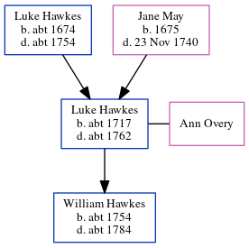

Luke Hawkes c1717 - c1762
[ Home ] | [ Calendar ] | [ Surnames Index ] | [ Errors ] | [ Family History ]The child of Luke Hawkes and Jane May, Luke Hawkes, the 6 times great-grandfather of Nigel Horne, was born in Kent, England c. 17171, was baptised in Fordwich, Kent, England on 31 Jul 1717 and had 1 child with Ann Overy: William.
He died c. 1762 in Fordwich1 and was buried there on 26 Sept 1762.
Parents
- Luke was born c. 1674
- Jane was born in 1675
Children
- William was born c. 1754
Citations
- Kent, England, Tyler Index to Parish Registers, 1538-1874 Online publication - Provo, UT, USA: Ancestry.com Operations, Inc., 2010. This collection was indexed by Ancestry World Archives Project contributors.Original data - Frank Watt Tyler. The Tyler Collection. Canterbury, Kent, England: The Institute of Herald
Family Tree
Map
Generated by ged2site. Last updated on Jul 3, 2024
Known Issues
Burial date (26 Sep 1762) has no citations